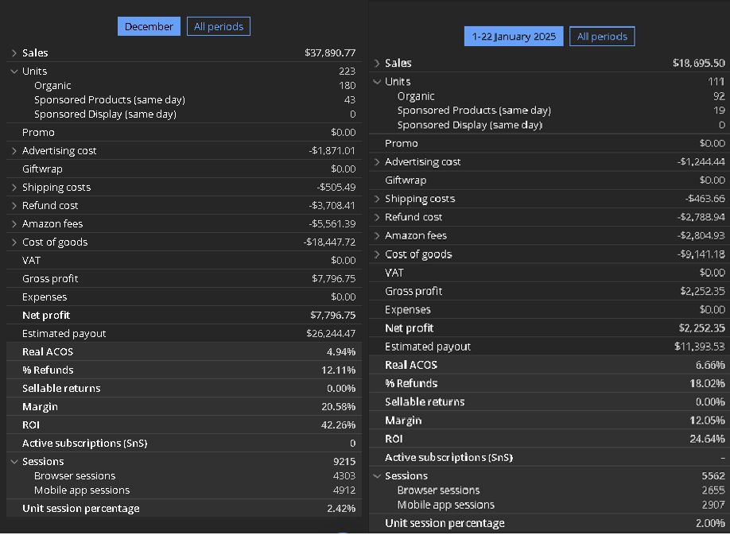

El problema
Muchos productos técnicos no fallan porque el usuario no los quiera, sino porque no entiende rápido si sirven para su caso. En categorías con compatibilidad, medidas o instalación, la imagen debe funcionar como argumento de venta y como filtro de dudas.
El objetivo fue transformar la galería en una secuencia clara: identificación del producto, beneficio principal, compatibilidad, uso, instalación y prueba visual de calidad.
